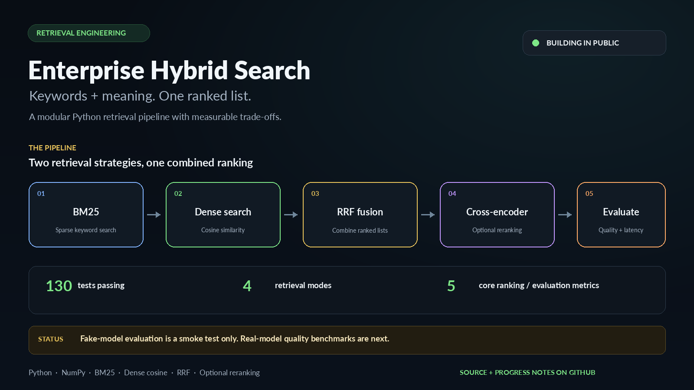

BM25 keyword retrieval
Scores exact token matches with Lucene-style IDF, term-frequency saturation, and document-length normalisation.
A modular Python pipeline exploring how BM25 keyword search and dense embedding search can work together, with Reciprocal Rank Fusion and optional cross-encoder reranking.
The code is split into small components so retrieval, model adapters, evaluation, and input validation can be tested independently.
Scores exact token matches with Lucene-style IDF, term-frequency saturation, and document-length normalisation.
Uses injected embedding functions and NumPy to rank all indexed chunks by cosine similarity.
Combines ranked lists without directly adding scores that live on different scales.
Rescores a limited candidate pool after fusion. Real-model effectiveness and latency still need measurement.
Supports Precision@K, Recall@K, MRR, nDCG@K, and p50/p95 latency, with separate document and chunk protocols.
Includes input-schema checks and checks for invalid numeric outputs, malformed shapes, ranking behavior, and edge cases.
JSONL documents become overlapping word-window chunks.
BM25 and dense search produce independent rankings.
RRF combines the candidate lists using rank positions.
A cross-encoder scores the fused candidate pool.
Compare quality metrics and latency before making claims.
This little browser demo uses made-up rankings to explain the fusion formula. It does not call the Python search code or a hosted model.
The first list is a hypothetical BM25 ranking; the second is a hypothetical dense ranking.
RRF score = sum of 1 / (c + rank), using c = 60 here. Higher scores rank first.
A document appearing high in both lists can beat a document that appears near the top of only one list. RRF ignores raw score magnitude and uses ranking positions.
This project is being built and measured in public. The baseline focuses on getting the retrieval mechanics and evaluation code right before drawing quality conclusions.
Next: run the BGE + MiniLM setup on labeled data, record retrieval and latency results, and then build a small real search UI/API. Feedback on the evaluation approach is welcome.
A social card you can use when posting updates. The project link in your post should point to the repository once it is public.
